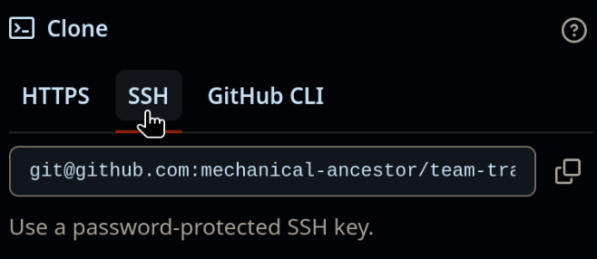
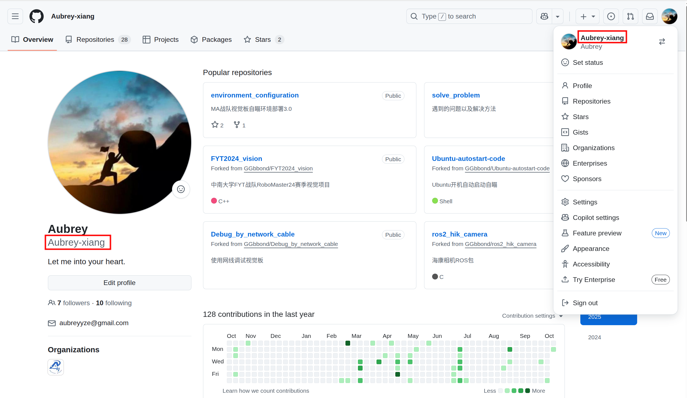
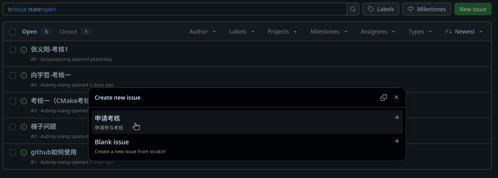
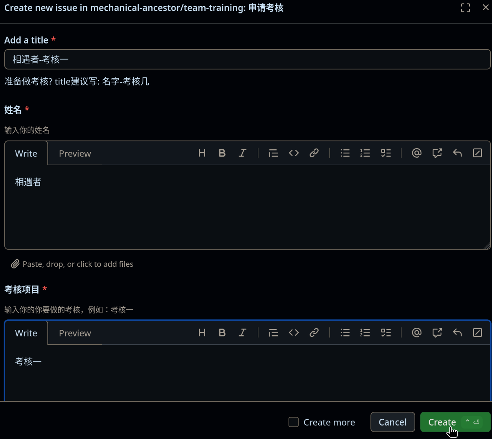
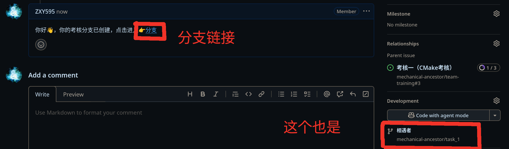

MA培训文档
本书的一些符号和标注
<XXX>表示命令里你需要根据实际情况替换的内容. 例如你要cloneteam-training仓库，git clone <url>，你需要替换成git clone git@github.com:mechanical-ancestor/team-training.git.
GitHub
简介
GitHub是一个基于Git的开源代码托管平台，提供各种版本控制功能，包括代码托管、协作开发、项目管理、代码审查、问题跟踪等。
GitHub不只是一个“放代码的地方”，它还是一个代码管理和部署的平台， GitHub提供了一系列的工具和服务，帮助开发者更好地管理代码、协作开发、部署项目。
也就是说，你甚至可以在GitHub部署自己的网页，甚至运作一个完整的公司。
开始使用GitHub
开始使用Git
核心概念
开始使用 GitHub
网络问题
可以尝试以下方法解决网络问题：
- Windows建议用，下载
Watt Toolkit免费加速GitHub，但是Linux里基本用不了。 - 科学上网，不方便细说
注册
点此注册 根据提示填写相关信息即可。
设置ssh密钥
为什么要设置ssh密钥
我们知道，要推送修改到GitHub仓库，首先肯定要验证你是谁，这样才能知道你有没有权限。
下面介绍三种GitHub支持的验证方式
- 密码认证
- ssh密钥认证
- 双因素(Two-factor)认证
由于GitHub在2021年8月13日以后不再支持密码登录，而是推荐双因素认证。
由于https协议在推送提交时用的就是密码认证，导致用https协议Clone下来的仓库，在推送修改时如果没有设置远程推送URL，
由于无法通过密码认证，导致无法推送。
但是如果使用ssh协议进行clone下来的仓库，就不需要输入用户名和密码，因为ssh协议使用你提前上传的ssh公钥进行认证。
为此我们可知，要使用ssh密钥认证，你需要：
- 生成ssh密钥对
- 将公钥上传到GitHub
- 用ssh协议Clone仓库，或者
设置远程推送URL

生成ssh密钥对
在终端输入以下命令，生成ssh密钥对：
ssh-keygen
然后如果没有特殊要求, 一路回车，默认即可。
这时候会在~/.ssh目录下生成两个文件：
id_ed25519: 私钥id_ed25519.pub: 公钥
这时可以复制公钥内容，准备上传到GitHub。
私钥千万不要泄露，泄露后任何人都可以用你的私钥登录你的GitHub账号，请妥善保管！
将公钥上传到GitHub
在GitHub点击头像，依次点击Settings，SSH and GPG keys，New SSH key按钮

Title: 随便起名Key: 粘贴之前生成的ssh公钥(id_ed25519.pub)的内容

加入组织
-
申请考核之前，是需要进入
mechanical-ancestor组织的。 -
提供你的github账号，我们即可邀请你进入mechanical ancestor(MA视觉组织)
你的github账号如下图所示： 
Git
1. Git 与 GitHub
Git 是工具：负责本地代码的版本控制（如记录修改、分支管理）。
GitHub 是平台：基于 Git 提供远程托管和协作功能，让分布式开发更便捷。
简单来说：使用git可以管理代码，并将代码托管到github，而github可以分享代码。
关于Git的使用可以看文档
当然，git的官方文档也是不错的，有兴趣的自行观看
仓库
介绍
仓库
组成
- Git仓库
- Issues
- Pull requests
问题跟踪
分支
工作流
其他文档
看看这个： Git简易指南
详细的有吗（有的兄弟有的）： Git入门教程(宝宝巴士版)
分支
分支是git版本控制系统中重要的概念
remote仓库
remote仓库是指托管在远程服务器上的仓库,
你本地的git仓库可以指定多个远程仓库
远程仓库可能包含多个分支, 如remote/main, remote/dev, 等.
添加仓库
git remote add <仓库名称> <url>
origin远程仓库
origin 一般表示默认的远程仓库,
添加origin远程仓库
git remote add origin <url>
默认上游分支
默认上游分支是分支的属性， 当在某个分支执行例如push等命令时的默认远程分支。
设置远程推送URL
git remote set-url --push origin <url>
local仓库
local仓库是指你本地的仓库
local仓库基本是remote仓库的一个镜像版本,
例如你如果有远程分支remote/main,
那么你本地仓库的main分支就是remote/main的一个镜像版本.
之后你所有关于main分支的修改本地的修改和提交都发生在本地仓库的main分支上
所以你push命令实际上是把本地的分支同步到远程仓库的对应分支上.
Git 工作流
克隆
git clone <url>
查看状态
查看当前分支状态
这会输出当前分支的状态和暂存区状态等状态.
git status
注意查看当前位于的分支，如果是刚克隆的仓库，默认是main分支。
有时你不被允许修改main分支，这时你需要切换到其他分支
查看提交历史
这一般用来查看历史提交记录.
git log
切换分支
切换到指定分支
git checkout <branch>
暂存区
暂存区是存放待提交的修改的地方. 类似于一个未封装的快递盒.
添加文件到暂存区
git add <file1> <file2> ...
类似于将东西放入盒子.
添加文件夹到暂存区
git add <folder>
类似于将一堆东西放入盒子.
.gitignore文件
有时你不想让git管理某些文件，比如临时文件, 编译生成的文件或者占用很大的视频文件， 又或者你不想让别人看到你的密码文件.
你可以在.gitignore文件中添加一些忽略规则，这样git就不会管理这些文件.
更多关于.gitignore文件的用法请参考官方文档.
以下是最简单的.gitignore文件:
# 忽略a.txt文件
a.txt
# 忽略所有.mp4后缀的文件
*.so
# 忽略build文件夹里的所有文件
build/
💡: #开头的行是注释, 可以去掉
提交
把暂存区的修改和提交信息封装为一个commit.
类似将快递盒贴上封条，并贴上相关便条.
快速提交
如果第一次提交，见配置用户名和邮箱
git commit -m "<message>"
可视化提交
这会在当前终端用$EDITOR1打开一个临时文件来输入提交信息.
git commit
配置用户名和邮箱
如果你从未配置过用户名和邮箱, git 会不知道你是谁，会在提交时报错, 并提示你像如下进行配置.
类似于封装快递时，要求你填上寄件人和你的联系地址.
git config --global user.name "<name>"
git config --global user.email "<email>"
配置好后请再次提交
拉取
从远程仓库拉取最新代码和变更到本地.
git pull
推送
进行代码推送前，请先进行查看状态和拉取操作, 确保在正确的分支并先同步了别人的更改.
推送到默认上游分支
把本地的提交推送到默认上游分支.
如果你从未设置过默认上游分支，请换用推送时设置默认上游分支
git push
详细推送到指定分支
有时你的仓库可能不只一个remote仓库, 或者你没有设置默认上游分支. 你可以指定推送到哪个远程仓库和分支.
如果你不指定<remote>和<branch>，那默认是提交到默认上游分支，
就像推送到默认上游仓库
git push <remote> <branch>
推送时设置默认上游分支
这一般发生在首次推送代码时， 这会提交代码到指定远程仓库的指定分支，并同时设置该分支默认上游分支.
git push -u <remote> <branch>
设置后，当前分支会记住你上一次推送的位置， 下次你只需要使用git push就可以推送到默认上游分支.
-
$EDITOR 是当前环境变量指定的文本编辑器, 通常是 nano 或 vi . ↩
流程
完整的考核的流程为申请考核，本地完成考核和提交考核。
申请
为什么考核要申请
这是为了方便追踪每个人的考核进度，提高考核效率， 也帮助每个人提前熟悉分工明确的开发流程。
申请考核
查找考核issue
要完成一个考核，你需要在考核文档仓库的Issue里找到对应的考核Issue,

在这个issue中的介绍有一个链接，指向考核几的仓库
创建问题
点击New issue按钮，再选择申请考核

根据模板提示填写即可
最后点击Create

加入MA的Github组织
等待管理员创建分支
等待管理员为你创建开发分支，管理员创建后，一般会在你的Issue里留言，并留下创建的分支的链接，并且Github会通过邮件自动通知你，管理员的留言如下图：

进入分支，完成考核
进入这个branch，在这里完成你的考核

上传代码
如何使用Git上传代码，请参考Git 工作流
关闭问题，完成考核
完成后，先进入问题，然后在Add a comment中写下你的考核完成情况，例如完成了什么
然后点击Close with comment，即关闭问题。

编程语言
ma所用的编程语言
c++ –>自瞄
rust –>导航
python –>雷达&&脚本
路线
c++(c) –> rust/python
c++
代码规范
为什么要代码规范
-
提高可读性，降低理解成本
-
便于维护和迭代
-
减少团队协作冲突
-
降低错误风险
怎么规范代码
交爷给了我们一份《C++编码规范》，可以作为参考：
上海交龙的C++编码规范
上海交龙的超多教程： 上海交龙的视觉教程
核心知识
暂时会前两个就行了
与C语言相同
入门：b站上有很多教程(大差不差)
可以看这个（详细）（捡自己感兴趣的看） c++参考手册
有兴趣的可以了解c++的新特性
cmake管理c++项目
Rust
入门： rust圣经
Python
入门：
b站有很多教程(大差不差)
不只有这些
markdown
什么是markdown？
markdown 是一种编写文档的语言
十分钟学会 Markdown: 学习 markdown
linux
ubuntu
1. 安装ubuntu
ubuntu 安装指南
这里会介绍ubuntu的基本安装的步骤，
对于不同的电脑会有不同的细节（问题），也会有相应的解决方案汇总
| 下载方式 | 优势 |
|---|---|
| 双系统安装 | 性能优势：双系统是直接在硬件上运行 Ubuntu，能充分利用电脑的硬件资源，如 CPU、显卡、内存等 |
| 虚拟机安装 | 便捷性强 |
推荐双系统安装
双系统安装
1. 下载 Ubuntu 镜像
首先：我们需要一个U盘（8GB足够）
下载地址
官网
推荐镜像下载
清华镜像
注：如何找镜像：
游览器直接搜，如 清华大学开源软件镜像站
进入镜像站后直接搜, 如ubuntu-releases
ubuntu镜像在官网也有链接
2. 制作启动盘
需要一个烧录软件，推荐使用下面这个：
其他烧录软件： 待补充
3. 划分空闲磁盘分区
a.在 Windows 系统中，右键点击 “此电脑”，选择 “管理”，进入 “磁盘管理”；
b.找到有空闲空间的磁盘（如 D 盘），右键点击该磁盘，选择 “压缩卷”，输入压缩空间大小（建议 100GB 以上，单位为 MB，1GB=1024MB，如 100GB 需输入 102400）；
c.压缩完成后，会出现一块 “未分配” 空间，无需进一步操作，关闭磁盘管理。
4. 设置电脑从 U 盘启动
a. 重启电脑，在开机画面出现时，快速按下启动快捷键（不同品牌电脑快捷键不同，常见的有 F2、F10、F12、Del，开机画面通常会提示）；
| 品牌 | 快捷键 |
|---|---|
| 拯救者 | F2 |
Ubuntu Environment
1. 目录
2.环境配置的一些经验
1.ubuntu中c++环境配置遇到的坑 90% 是各个库版本不兼容
2.如何安装c++库
如果你学过cmake，就应该知道c++项目都是(应该80%以上的吧)通过cmake编译和管理的。如果你不了解cmake，可以参考这里。
所以，如果你想安装c++库：
1.源码安装：
思路和你编译运行c++程序一样，只是要先下载源码
一般来说，c++库都有github仓库，你可以直接下载源码，然后编译安装。
git clone '库的github地址'
例子：
git clone https://github.com/opencv/opencv.git
进入源码目录，执行
mkdir build
cd build
cmake ..
make -j8 # 编译，-j8表示使用8个线程并行编译
sudo make install # 安装到系统目录
2.包管理器安装：
如果你使用的是Ubuntu，你可以直接使用apt-get安装。
sudo apt-get install '库在apt-get中的名字'
注：apt-get安装的库一般都比较老，版本比较低，如果想用最新版本，可以参考源码安装。
名字不知道的话，可以问ai
例子：
sudo apt-get install libopencv-dev
3. 如何跑开源项目
一般来说，开源项目都有详细的安装说明，你可以参考。 在开源项目(github上)的readme中，一般都会有编译和运行的命令。
思考： 在跑开源项目的时候，以及下面配置自瞄环境的时候 有各种不同的命令, 他们的作用是什么？，有其他方法吗？，相比于其他方法有什么优势(区别)
3.自瞄环境配置
下面是老学长的环境配置（一点史，请见谅），可以参考：
老学长的环境配置
MA 导航
概述
导航是指在一个环境中，从一个点（称为起点）到另一个点（称为终点）的路径规划。 在实际应用中，导航系统需要根据环境的复杂性、障碍物、地形等因素，制定出一条安全、有效、舒适的路径。
建图，定位，感知
决策
路径规划，轨迹优化，避障，路径跟踪